圖解 08｜一條算式管好一週訓練負荷
完整研究：08_教練實務整合_從研究到課表 · 回到 首頁
📌 重點摘要卡
- 一句話核心： 用 RPE × 分鐘，就能每天低成本監控訓練負荷。
- 關鍵數據： 示範週：總負荷 2,835 AU｜單調度 1.68｜壓力值約 4,755｜賽前減量 40–60%
- 因果流程：
課後 RPE × 時間➔每日／每週負荷、單調度➔調整高低交替與減量 - 跨域應用： 羽球訓練：Google 表單收 RPE，自動算週負荷。數據模型：時間序列聚合（日 → 週）、平均與標準差。IT 教學：Apps Script／試算表公式實作 sRPE 儀表板。
❓ 不用心率帶，也能量負荷？
只要一個問題：「整堂課有多累？（0–10）」再乘以分鐘數。這個方法叫 session-RPE（課程主觀用力），由 Foster 等人於 2001 年提出，已在多種運動中驗證。
🎬 動畫：一週負荷的高低起伏

📊 算一次給你看
| 項目 | 算式 | 本例（示範數值） |
|---|---|---|
| 單次負荷 | RPE × 分鐘 | 週二：8 × 90 = 720 AU |
| 週總負荷 | 七天相加 | 2,835 AU |
| 單調度 monotony | 每日平均 ÷ 標準差 | 1.68 |
| 壓力值 strain | 週總負荷 × 單調度 | 約 4,755 |
- AU（arbitrary unit，任意單位）：只用來和自己比較，不能跨隊比較。
- 單調度越高 = 每天都差不多累，缺少高低交替。Foster（1998）提出這兩個指標；常把單調度 2.0 當作提醒線，但它不是診斷門檻。
🧭 恢復的先後順序
flowchart LR
S["① 睡眠"] --> N["② 營養與補水"] --> P["③ 課表高低交替"] --> A["④ 低強度主動恢復"] --> R["⑤ 滾筒、壓力衣"]越前面證據越強、效益越大。不要把時間花在第 ⑤ 項，卻犧牲了第 ① 項。
🧠 延伸知識
📝 賽前減量（taper）
重要比賽前約兩週，把訓練總量減少約 40–60%，但保持強度與頻率（Bosquet 2007 統合分析）。一般週末賽，只需賽前 1–2 天降低總量。
⚠️ 不要迷信 ACWR
「本週負荷 ÷ 過去四週平均」（急慢性負荷比）有嚴重的統計問題（Impellizzeri 2020），不適合用來預測受傷。當作「負荷變化提醒」即可。
💡 每天 30 秒自評
睡眠、痠痛、疲勞、壓力、心情各 1–5 分。連續兩天明顯變差，就要問原因、調整課表。
✅ 30 秒自我測驗
❓ 1. RPE 6、練 80 分鐘，負荷是多少？
6 × 80 = 480 AU。
❓ 2. 單調度很高代表甚麼？
每天的負荷都差不多，缺少高低交替，疲勞較難恢復。
❓ 3. 賽前減量要減甚麼、保留甚麼？
減總量（約 40–60%），保留強度與頻率。